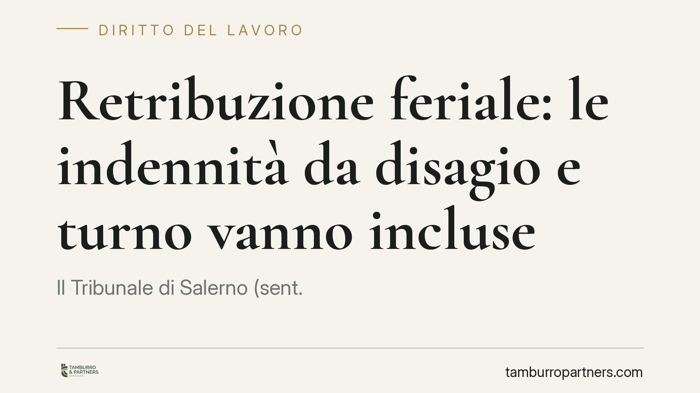

Retribuzione feriale: le indennità da disagio e turno vanno incluse
Il Tribunale di Salerno (sent. 1373/2026) ha stabilito che la retribuzione corrisposta durante le ferie deve comprendere le indennità per disagio, turno e lavoro notturno, quando presentano determinati caratteri. Il principio punta a evitare che il lavoratore subisca una penalizzazione economica nel periodo di riposo e sia così indotto a non fruirne. Vediamo cosa cambia per turnisti e datori di lavoro.

Il caso
La pronuncia affronta una questione ricorrente: cosa si intende per "normale retribuzione" quando il lavoratore è in ferie. Molte buste paga, nel periodo feriale, scontano l'assenza di voci variabili legate alle modalità di svolgimento della prestazione, come le indennità di turno, di notturno o di disagio. Il risultato è un reddito più basso proprio quando si riposa.
Il Tribunale di Salerno, Sezione Lavoro, con la sentenza 1373/2026 dell'11 settembre 2026, ha affermato che questa decurtazione può essere illegittima. La retribuzione feriale deve riflettere quanto il lavoratore percepisce ordinariamente quando lavora, incluse le componenti stabilmente collegate alla sua posizione.
Inquadramento normativo
Il riferimento centrale è l'articolo 7 della Direttiva 2003/88/CE, che riconosce il diritto a ferie annuali retribuite. La giurisprudenza europea (in particolare la Corte di Giustizia UE) ha chiarito da tempo che la retribuzione feriale deve corrispondere alla retribuzione "ordinaria": una somma inferiore potrebbe scoraggiare l'esercizio del diritto alle ferie, svuotandolo di significato.
Sul piano interno, la base è l'articolo 36 della Costituzione, che garantisce al lavoratore una retribuzione proporzionata alla quantità e qualità del lavoro e il diritto irrinunciabile alle ferie annuali retribuite. Il Tribunale salernitano applica questi principi stabilendo tre requisiti perché una voce variabile entri nel calcolo della retribuzione feriale.
Primo requisito: la connessione tra l'indennità e le mansioni svolte o lo status professionale del lavoratore. La voce deve essere legata al modo in cui ordinariamente si presta l'attività, non a eventi occasionali.
Secondo requisito: la continuità della corresponsione. L'indennità deve essere percepita con regolarità, non in via sporadica o eccezionale.
Terzo requisito: la consistenza dell'importo. La somma deve avere un peso economico apprezzabile, tale da incidere in modo significativo sul reddito complessivo.
Implicazioni pratiche
Per i lavoratori turnisti e per chi svolge mansioni disagiate o notturne in modo stabile, la pronuncia ha un impatto concreto. Se le indennità rispettano i tre requisiti, il loro valore va considerato nel calcolo di quanto spetta durante le ferie. Una retribuzione feriale costruita solo sulla paga base, senza queste componenti, può risultare illegittima e dare luogo a differenze retributive.
Per i datori di lavoro, la decisione impone una verifica dei criteri di calcolo adottati. Non ogni voce variabile rientra automaticamente nella retribuzione feriale: le indennità realmente occasionali o legate a prestazioni straordinarie restano fuori. La valutazione va fatta voce per voce, incrociando quanto previsto dal contratto collettivo applicabile con l'effettivo andamento delle erogazioni.
Va sottolineato che si tratta di una pronuncia di merito, non di un orientamento consolidato della Corte di Cassazione. Non crea un automatismo valido in ogni situazione. Tuttavia si inserisce in una linea interpretativa coerente con il diritto europeo, e offre argomenti utili sia in sede di contenzioso sia di gestione preventiva.
Cosa fare in concreto
- Verificate la busta paga del periodo feriale: confrontate gli importi con quelli dei mesi di piena attività e individuate eventuali scostamenti nelle voci variabili.
- Ricostruite la natura delle indennità: stabilite se turno, notturno o disagio siano percepiti con continuità e abbiano un peso economico rilevante, applicando i tre requisiti indicati.
- Consultate il contratto collettivo di riferimento: le modalità di calcolo della retribuzione feriale sono spesso disciplinate dalla contrattazione, che può integrare o specificare i principi generali.
- Datori di lavoro: eseguite un audit dei criteri retributivi per allineare le prassi aziendali ai principi europei e ridurre il rischio di richieste di differenze.
- Valutate la tempestività di eventuali azioni: i crediti retributivi sono soggetti a termini di prescrizione; un'analisi preliminare consente di stabilire l'orizzonte temporale recuperabile.
Conclusioni
Il principio è lineare: le ferie non devono diventare un costo economico per chi le fruisce. Quando le indennità sono stabilmente legate al modo di lavorare, la loro esclusione dalla retribuzione feriale contrasta con la ratio del diritto al riposo. Ogni situazione va comunque esaminata nel dettaglio, perché la qualificazione delle singole voci è decisiva.
---
*Contributo informativo a cura di Tamburro & Partners - Avv. Giuseppe Tamburro. Non costituisce parere legale.*
Ogni storia di lavoro ha i suoi tempi.
Se gestisci HR e vuoi un confronto su contenzioso, ispezioni o licenziamenti, scrivi allo studio. Ti rispondiamo entro un giorno lavorativo.